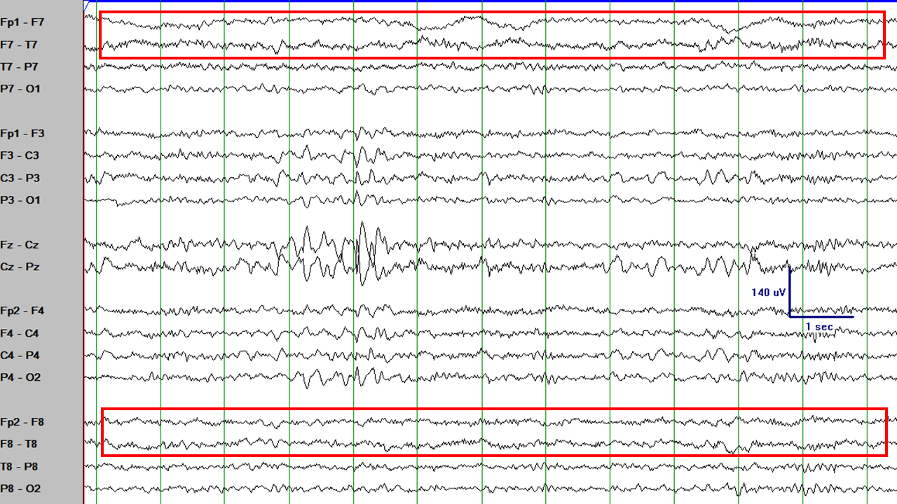

Sleep and the transitions from wakefulness to sleep and from sleep to wakefulness are crucial parts of an EEG.
When an EEG does not contain sleep, it is considered a somewhat incomplete test. So much so that some centers repeat the EEG
if sleep was not captured in the initial EEG.
Epileptiform abnormalities tend to appear more frequently during sleep or in the wake-sleep transitions.
Abnormalities that are not clearly seen during wakefulness because they are buried in muscle artifact
during wakefulness may be seen more clearly during sleep. Infantile spasms tend to occur more frequently when the infant wakes up from sleep.
In short, an EEG without sleep is almost like a car with no wheels. Let's get more familiar with sleep then.
FALLING ASLEEP
Most people do not fall asleep abruptly. There is a progressive transition from wakefulness to sleep in which light sleep
evolves into a deeper and deeper sleep.
Transition from wakefulness to sleep.
Transition from wakefulness to sleep (same EEG segment as above). The initial part of this EEG segment
shows a well-formed posterior dominant rhythm. Towards the center of the image the posterior dominant rhythm becomes less apparent.
Towards the end of this EEG segment there are some rudimentary vertex waves.
Drowsiness (stage I sleep).The following page in the EEG shows that the patient is fully into phase I sleep
as shown by the well-formed vertex sharp waves which are apparent in the midline and biparasagittal regions.
This is a good opportunity to introduce the location of the channels in the EEG. Roughly, the channels
in an anterior-posterior bipolar montage (one of the most popular montages in EEG) go anteriorly to posteriorly in 5 groups:
left temporal, left parasagittal, midline, right parasagittal, and right temporal. Each of these 5 groups are represented by
the purple ovals in the image. We will explain montages in more detail in another post, but this is a good place to get familiar
with roughly what part of the head each area of the EEG is looking at.

Lateral slow movements of the eyes (seen as shown in the red rectangles above) are one of the most characteristic
features of drowsiness. However, frequently they are not present. Frequently, a particular stage of the wake-sleep cycle can be
identified even if not all typical features are present.
For example, this EEG segment occurs during drowsiness (do you see the vertex waves?), but there are no slow lateral movements of the eyes.
DEEPER SLEEP
If the patient remains asleep, there is a progressive transition to deeper stages of sleep. These are Stage II sleep (NREM2) and Stage III (NREM3).
Stage II sleep. The EEG segment above shows the most characteristic feature of stage II sleep: sleep spindles.
Sleep spindles. Sleep spindles are characterized by their shape (fusiform), their frequency (around 14 Hz), and their location
(central regions).
Sleep spindles. Sleep spindles can look different in different patients, but are generally symmetrical, located in the central regions,
and around 14 Hz in frequency.
As the patient gets into deeper sleep, vertex waves progressively dissappear, sleep spindles become less prominent, and
the EEG tracing slows down and increases in amplitude. Stage III (NREM3) is characterized by high-amplitude slow waves
occupying at least 20% of the EEG tracing.
Stage III sleep. The predominant frequency in stage III sleep is delta (3 Hz or lower) and the
amplitude of the waves is quite high (see the scale legend at 400 uV and compare the amplitude of this EEG portion with
the EEGs from prior stages of sleep).
TRANSITIONS
It is very frequent (and normal) to have brief awakenings during sleep.
On the initial part of this EEG tracing there are sleep spindles and towards the end
there are hypersynchronous high-amplitude waves, and some muscle artifact can be seen.
The next page in the EEG shows better formed hypersynchrony and
more muscle artifact.
The next page in the EEG shows vertex waves and then sleep spindles towards
the end of the page.
The transitions between wake and sleep stages (and viceversa) can look unusual with high-voltage
hypersynchronic waves. Even if they look unusual, they are completely normal during transitions.
Hypersynchrony is seen towards the end of this EEG tracing.
Hypersynchrony continues in the next EEG page followed by muscle and movement
artifact (arousal).
SUMMARY
At this point you are able to recognize the main normal features and stages of an EEG.
You are ready to move one step ahead. Things will get more interesting soon.